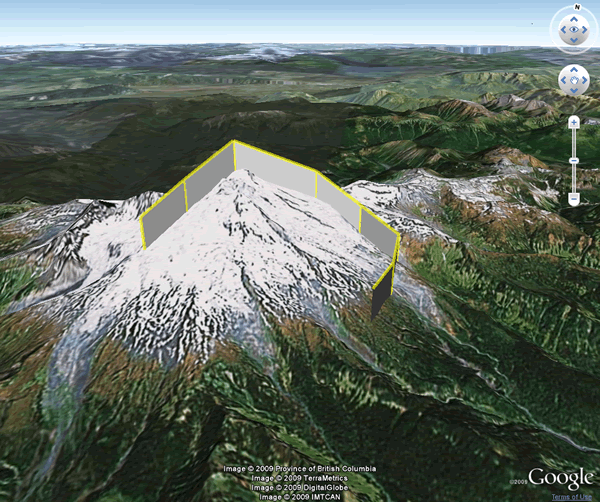
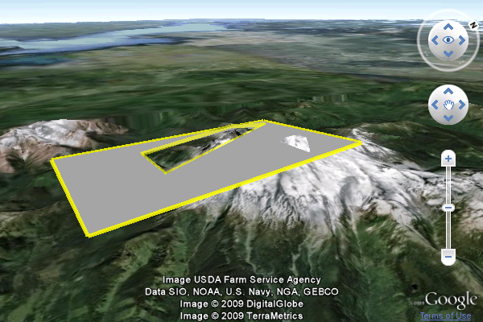
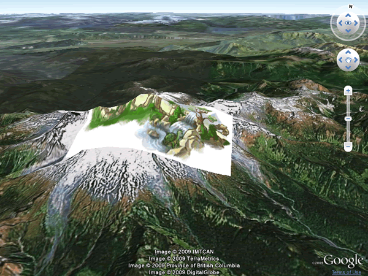
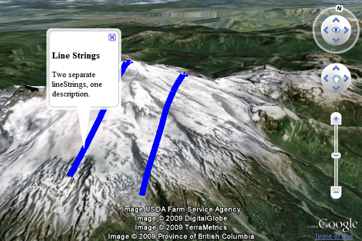

©2010 Google -
Code Home -
Terms of Service -
Privacy Policy -
Site Directory
Google Code offered in:
English -
Español -
日本語 -
한국어 -
Português -
Pусский -
中文(简体) -
中文(繁體)
A LineString is a connected set of line segments. The color, color mode, and
width of lines can all be specified in the associated placemark's LineStyle. If
the line string is drawn above the Earth's surface or above the sea floor, it
can be set to extend down to the terrain using the
extrude property; if the line is drawn on the surface (by clamping to
the ground or sea floor), it can be set to follow the terrain using the tesselate
property.
The simplest of LineStrings:
// Create the placemark
var lineStringPlacemark = ge.createPlacemark('');
// Create the LineString
var lineString = ge.createLineString('');
lineStringPlacemark.setGeometry(lineString);
// Add LineString points
lineString.getCoordinates().pushLatLngAlt(48.754, -121.835, 0);
lineString.getCoordinates().pushLatLngAlt(48.764, -121.828, 0);
lineString.getCoordinates().pushLatLngAlt(48.776, -121.818, 0);
lineString.getCoordinates().pushLatLngAlt(48.787, -121.794, 0);
lineString.getCoordinates().pushLatLngAlt(48.781, -121.778, 0);
lineString.getCoordinates().pushLatLngAlt(48.771, -121.766, 0);
lineString.getCoordinates().pushLatLngAlt(48.757, -121.768, 0);
lineString.getCoordinates().pushLatLngAlt(48.747, -121.773, 0);
// Add the feature to Earth
ge.getFeatures().appendChild(lineStringPlacemark);
And slightly more complex, with line styling and extruded geometry:
Source: http://code.google.com/apis/earth/documentation/samples/linestring_example.html

// Create the placemark
var lineStringPlacemark = ge.createPlacemark('');
// Create the LineString; set it to extend down to the ground
// and set the altitude mode
var lineString = ge.createLineString('');
lineStringPlacemark.setGeometry(lineString);
lineString.setExtrude(true);
lineString.setAltitudeMode(ge.ALTITUDE_RELATIVE_TO_GROUND);
// Add LineString points
lineString.getCoordinates().pushLatLngAlt(48.754, -121.835, 700);
lineString.getCoordinates().pushLatLngAlt(48.764, -121.828, 700);
lineString.getCoordinates().pushLatLngAlt(48.776, -121.818, 700);
lineString.getCoordinates().pushLatLngAlt(48.787, -121.794, 700);
lineString.getCoordinates().pushLatLngAlt(48.781, -121.778, 700);
lineString.getCoordinates().pushLatLngAlt(48.771, -121.766, 700);
lineString.getCoordinates().pushLatLngAlt(48.757, -121.768, 700);
lineString.getCoordinates().pushLatLngAlt(48.747, -121.773, 700);
// Create a style and set width and color of line
lineStringPlacemark.setStyleSelector(ge.createStyle(''));
var lineStyle = lineStringPlacemark.getStyleSelector().getLineStyle();
lineStyle.setWidth(5);
lineStyle.getColor().set('9900ffff'); // aabbggrr format
// Add the feature to Earth
ge.getFeatures().appendChild(lineStringPlacemark);
You can use polygons to create a variety of 2- and 3-dimensional shapes.
In the following example, a 'linear ring' is created, consisting of a rectangular cutout in the center of a larger rectangle. The altitude is set to be 700 feet above the terrain at each point.
Line and polygon styling are accomplished using the getLineStyle()
and getPolyStyle() functions.
Source: http://code.google.com/apis/earth/documentation/samples/polygon_example.html

// Create the placemark.
var polygonPlacemark = ge.createPlacemark('');
// Create the polygon.
var polygon = ge.createPolygon('');
polygon.setAltitudeMode(ge.ALTITUDE_RELATIVE_TO_GROUND);
polygonPlacemark.setGeometry(polygon);
// Add points for the outer shape.
var outer = ge.createLinearRing('');
outer.setAltitudeMode(ge.ALTITUDE_RELATIVE_TO_GROUND);
outer.getCoordinates().pushLatLngAlt(48.80, -121.80, 700);
outer.getCoordinates().pushLatLngAlt(48.80, -121.90, 700);
outer.getCoordinates().pushLatLngAlt(48.70, -121.90, 700);
outer.getCoordinates().pushLatLngAlt(48.70, -121.80, 700);
polygon.setOuterBoundary(outer);
// Add inner points.
var inner = ge.createLinearRing('');
inner.setAltitudeMode(ge.ALTITUDE_RELATIVE_TO_GROUND);
inner.getCoordinates().pushLatLngAlt(48.77, -121.83, 700);
inner.getCoordinates().pushLatLngAlt(48.77, -121.87, 700);
inner.getCoordinates().pushLatLngAlt(48.73, -121.87, 700);
inner.getCoordinates().pushLatLngAlt(48.73, -121.83, 700);
polygon.getInnerBoundaries().appendChild(inner);
//Create a style and set width and color of line
polygonPlacemark.setStyleSelector(ge.createStyle(''));
var lineStyle = polygonPlacemark.getStyleSelector().getLineStyle();
lineStyle.setWidth(5);
lineStyle.getColor().set('9900ffff');
// Add the placemark to Earth.
ge.getFeatures().appendChild(polygonPlacemark);
Circles are drawn as many-sided polygons. By specifying a large number of points around the perimeter, the polygon can be made smooth enough so as to appear as a circle. It's recommended to define at least 25 points.
Drawing a circle is best accomplished
using a utility script, such as the one below. The createCirclePolygon function takes three
parameters: the latitude at the center of your circle, the longitude at the center,
and the radius. With this information, it uses JavaScript's built in Math library
to calculate 25 points around the outside of the circle.
You can call this function any number of times, to create multiple circles.
function createCirclePolygon(centerLat, centerLng, radius) {
function makeCircle(centerLat, centerLng, radius) {
var ring = ge.createLinearRing('');
var steps = 25;
var pi2 = Math.PI * 2;
for (var i = 0; i < steps; i++) {
var lat = centerLat + radius * Math.cos(i / steps * pi2);
var lng = centerLng + radius * Math.sin(i / steps * pi2);
ring.getCoordinates().pushLatLngAlt(lat, lng, 0);
}
return ring;
}
var polygonPlacemark = ge.createPlacemark('');
polygonPlacemark.setGeometry(ge.createPolygon(''));
var outer = ge.createLinearRing('');
polygonPlacemark.getGeometry().setOuterBoundary(makeCircle(centerLat, centerLng, radius));
polygonPlacemark.setName('placemark');
ge.getFeatures().appendChild(polygonPlacemark);
}
Ground overlays accept an image URL and drape the image over the Earth's terrain in the specified location. Ground overlays are always rectangular, but can be rotated any number of degrees.
Note: while ground overlays created with the API are limited to rectangular shapes, <gx:LatLonQuad> elements can be imported as KML, and support non-rectangular quadrilateral ground overlays. Refer to the KML Reference for more information about <gx:LatLonQuad> (including the required gx namespace declaration in the <kml> element of your file); the KML chapter of this Developer's Guide provides information about importing KML into the plugin.
Source: http://code.google.com/apis/earth/documentation/samples/groundoverlay_example.html

// Create the GroundOverlay
var groundOverlay = ge.createGroundOverlay('');
// Specify the image path and assign it to the GroundOverlay
var icon = ge.createIcon('');
icon.setHref("http://www.google.com/logos/earthday08.gif");
groundOverlay.setIcon(icon);
// Specify the geographic location
var latLonBox = ge.createLatLonBox('');
latLonBox.setBox(48.80, 48.75, -121.77, -121.85, 0);
groundOverlay.setLatLonBox(latLonBox);
// Add the GroundOverlay to Earth
ge.getFeatures().appendChild(groundOverlay);
A screen overlay is an image that is fixed to the plugin window. ScreenOverlays can be used to create compasses, logos, and heads-up displays in Google Earth.
Positioning of the overlay is accomplished by mapping a point in the image specified by the screenXY property (see important note below) to a point on the screen specified by the overlayXY property. The image can also be rotated, by setting the rotation degrees about a point relative to the screen specified by the rotationXY property.
Important note: due to a bug in the API, screenXY and overlayXY have opposite meanings than their KML counterparts. This means that in the API, screenXY defines the point on the overlay image that is mapped to a point on the screen, defined by overlayXY.
This bug will not be fixed until the next major revision of the Earth API, so that applications built upon version 1.x will not break.
The following example overlays a Google logo on the screen. As the view is changed within the viewport, the image will remain in the same location.
Source: http://code.google.com/apis/earth/documentation/samples/screenoverlay_example.html

// Create the ScreenOverlay
var screenOverlay = ge.createScreenOverlay('');
// Specify a path to the image and set as the icon
var icon = ge.createIcon('');
icon.setHref('http://www.google.com/intl/en_ALL/images/logo.gif');
screenOverlay.setIcon(icon);
// Set the ScreenOverlay's position in the window
screenOverlay.getOverlayXY().setXUnits(ge.UNITS_PIXELS);
screenOverlay.getOverlayXY().setYUnits(ge.UNITS_PIXELS);
screenOverlay.getOverlayXY().setX(200);
screenOverlay.getOverlayXY().setY(200);
// Set the overlay's size in pixels
screenOverlay.getSize().setXUnits(ge.UNITS_PIXELS);
screenOverlay.getSize().setYUnits(ge.UNITS_PIXELS);
screenOverlay.getSize().setX(250);
screenOverlay.getSize().setY(75);
// Specify the point in the image around which to rotate
screenOverlay.getRotationXY().setXUnits(ge.UNITS_FRACTION);
screenOverlay.getRotationXY().setYUnits(ge.UNITS_FRACTION);
screenOverlay.getRotationXY().setX(0.5);
screenOverlay.getRotationXY().setY(0.5);
// Rotate the overlay
screenOverlay.setRotation(25);
// Add the ScreenOverlay to Earth
ge.getFeatures().appendChild(screenOverlay);
MultiGeometries are a collection of any number of geometries. When collected together as a MultiGeometry, members will share the same properties; for example, two LineStrings collected in a MultiGeometry each launch the same description balloon when clicked (if a description is specified for the MultiGeometry placemark).
Common uses for MultiGeometries include:
The members of a MultiGeometry can be scaled, styled, and selected as a group.
Source: http://code.google.com/apis/earth/documentation/samples/multigeometry_example.html

var line1 = ge.createLineString('');
line1.getCoordinates().pushLatLngAlt(48.740, -121.820, 0);
line1.getCoordinates().pushLatLngAlt(48.800, -121.820, 0);
line1.setTessellate(true);
line1.setAltitudeMode(ge.ALTITUDE_CLAMP_TO_GROUND);
var line2 = ge.createLineString('');
line2.getCoordinates().pushLatLngAlt(48.740, -121.800, 0);
line2.getCoordinates().pushLatLngAlt(48.800, -121.800, 0);
line2.setTessellate(true);
line2.setAltitudeMode(ge.ALTITUDE_CLAMP_TO_GROUND);
var multiGeometry = ge.createMultiGeometry('');
multiGeometry.getGeometries().appendChild(line1);
multiGeometry.getGeometries().appendChild(line2);
var multGeoPlacemark = ge.createPlacemark('');
multGeoPlacemark.setGeometry(multiGeometry);
multGeoPlacemark.setStyleSelector(ge.createStyle(''));
var lineStyle = multGeoPlacemark.getStyleSelector().getLineStyle();
lineStyle.setWidth(10);
lineStyle.getColor().set('ffff0000');
ge.getFeatures().appendChild(multGeoPlacemark);
multGeoPlacemark.setName('Line Strings');
multGeoPlacemark.setDescription('Two separate lineStrings, one description.');
The Google Earth Plugin supports dioramas (scenes reproduced in three dimensions) in COLLADA format. When a 3D model is imported into Google Earth, it is translated, rotated, and scaled to fit into the Earth coordinate system. All transformations take place around the model's origin point in COLLADA.
The following example loads and displays a COLLADA model:
Source: http://earth-api-samples.googlecode.com/svn/trunk/examples/model.html
// Placemark
var placemark = ge.createPlacemark('');
placemark.setName('model');
// Placemark/Model (geometry)
var model = ge.createModel('');
placemark.setGeometry(model);
// Placemark/Model/Link
var link = ge.createLink('');
link.setHref('http://earth-api-samples.googlecode.com/svn/trunk/examples/' +
'static/splotchy_box.dae');
model.setLink(link);
// get center look at location
var lookAt = ge.getView().copyAsLookAt(ge.ALTITUDE_RELATIVE_TO_GROUND);
// Placemark/Model/Location
var loc = ge.createLocation('');
loc.setLatitude(lookAt.getLatitude());
loc.setLongitude(lookAt.getLongitude());
model.setLocation(loc);
// add the model placemark to Earth
ge.getFeatures().appendChild(placemark);
// zoom into the model
lookAt.setRange(300);
lookAt.setTilt(80);
ge.getView().setAbstractView(lookAt);